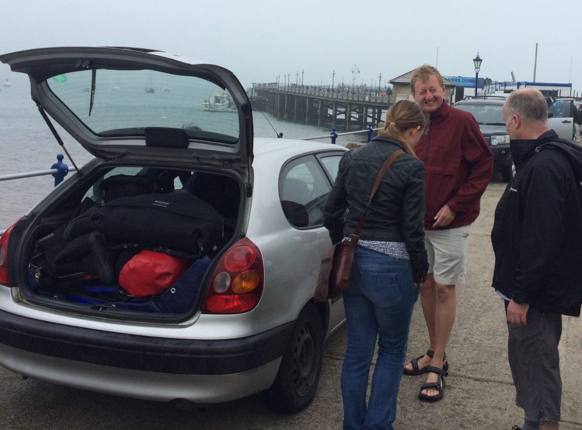
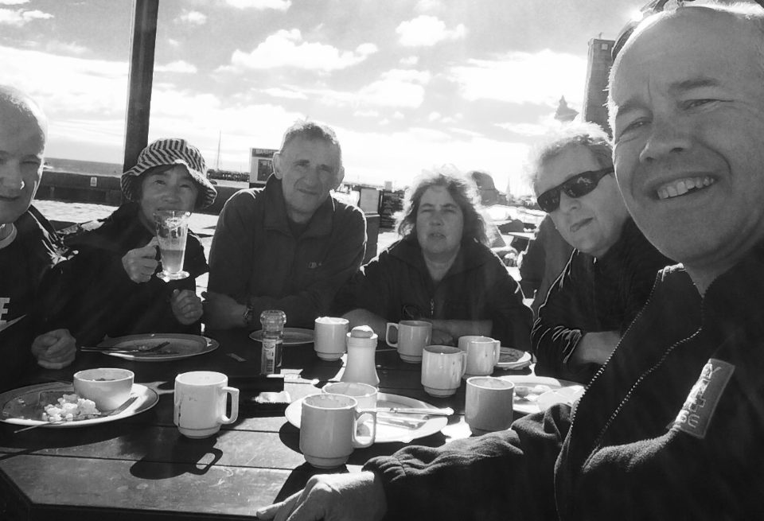

Club trip to Swanage - June 2017
Waking up at 6am on Saturday morning to the pitter patter of rain on the caravan window was not what the gorgeous sunny weather of the previous month had promised. Nevertheless, Swanage Pier beckoned so, after a quick breakfast, it was off to the pier to ensure that we would get a parking place on said pier when it opened at 7am. All Argonaut cars arrived at the same time! Next to Divers Down who supplied all necessary needed extra equipment and who also promised to fill tanks in a hurry if needed. (The perfect second hand dry suit for Mark was a necessity Rachel!)
Figure 1: Arriving at the Pier on Saturday morning, Rachel, Trevor and Chris

First dive was under the pier, a useful shallow dive for those of us who had not yet dived that year to get back into the swing of things. On the way out there was plenty to see including crabs and fishes (not technical I know) and other bits and pieces under the pier. As usual, it was easy to find our way out but more difficult to get back with the tide starting to push against us and the suspicion that we were going round and round in circles (Navigation by surfacing seemed to fix that).
Next dive was the Fleur de Lys on the Mary Jo. Pre-dive chat seemed to indicate that it was a pile of wood on the sea floor. However, giant stepping off the Mary Joe and descending the shot line showed that there was still a distinct shape to it. It was a bit busy to start, with all 12 of us bumping around but we all soon separated. It did take us two circuits to find the line to the steal barge which was definitely in one piece. We saw plenty of Wrasse and many Sea Squirts on the barge.
The team decided against a cheeky third dive and repaired to the caravan park to freshen up before going to the Black Swan. We couldn’t get inside so we were outside (which was fine being hardened divers). The meal was great fun with much banter and joking around.
Sunday morning started with a beautiful view from the caravan park and once again we were outside the pier by 7am. Once on the pier we had to wait till 11am till our first dive so clearly we had to disappear to the nearest café for breakfast and chat.
Figure 2: : Breakfast with Chris, Akiko, Boggie, Sarah, Trevor and Alex

The first dive took us on the Mary Jo again to the Carentan in 30m of water. Down the shot line the water got darker till we approached the wreck with the water brightening up again due to the reflection of the sea bed (orn possibly because the clouds had parted). I managed to see the sonar eye but missed the highly polished toilet seat. Saw a Conger eel hiding in a tube. Time at 30m was short so with 5mins before deco started the DSMB was deployed and up we went. Clearly on the boat there was much talk about who had gone the deepest with 10cm being the difference between first and second place.
Last dive for me was a drift off Old Harry on the Viper with the sea getting rough and sea sickness threatening. We had to hang around for the shot line marker buoy to pop up as with any tide, it went below the surface. When all was ready the whole boat disembarked like a parachute jump and off we went to the bottom. I used a buddy line with Trevor as my SMB pulled hard and threatened to separate me from my buddy. Saw many ghostly dog fish but not much else. Most of the sea bed was gravel and gave me to wonder whether it would have been like this 200 years ago before the advent of bottom trawling. Well before gas or deco time became a problem, we surfaced as there was little to see.
Some of the troop stayed till Monday but I left on Sunday having had a great weekend. Many thanks to Rachel, Mark and Sarah for organising the trip. I look forward to next year!
by Alex